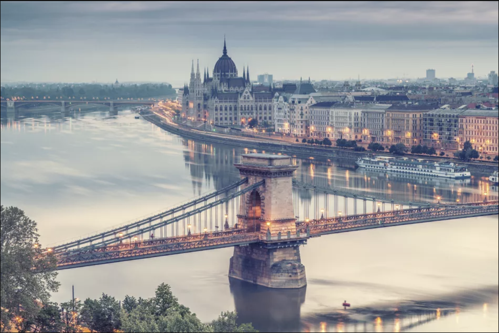

Budapest
Budapest /ˈbuːdəpɛst/ is the capital and the most populous city of Hungary, and the tenth-largest city in the European Union by population within city limits.[9][10][11] The city had an estimated population of 1,752,704 in 2016 distributed over a land area of about 525 square kilometres (203 square miles).[12] Budapest is both a city and county, and forms the centre of the Budapest metropolitan area, which has an area of 7,626 square kilometres (2,944 square miles) and a population of 3,303,786, comprising 33 percent of the population of Hungary.
The history of Budapest began when an early Celtic settlement transformed into a Roman town of Aquincum,[15][16] the capital of Lower Pannonia.[15] The Hungarians arrived in the territory in the late 9th century.[17] The area was pillaged by the Mongols in 1241.[18] Buda, the settlements on the west bank of the river, became one of the centres of Renaissance humanist culture by the 15th century.[19][20][21] The Battle of Mohács in 1526 was followed by nearly 150 years of Ottoman rule.[22] After the reconquest of Buda in 1686, the region entered a new age of prosperity. Pest-Buda became a global city with the unification of Buda, Óbuda, and Pest on November 17, 1873, with the name 'Budapest' given to the new capital.[12][23] Budapest also became the co-capital of the Austro-Hungarian Empire,[24] a great power that dissolved in 1918, following World War I. The city was the focal point of the Hungarian Revolution of 1848, the Battle of Budapest in 1945, and the Hungarian Revolution of 1956.
Budapest is a Alpha- global city with strengths in commerce, finance, media, art, fashion, research, technology, education, and entertainment.[27][28] It is Hungary's financial centre[29] and the highest ranked Central and Eastern European city on Innovation Cities Top 100 index,[30][31][32] as well ranked as the second fastest-developing urban economy in Europe.[33] Budapest is host to many major international organization's regional offices, including the United Nations and ICDT,[34] furthermore it is the headquarters of the European Institute of Innovation and Technology,[35] the European Police College[36] and the first foreign office of the China Investment Promotion Agency.[37] Over 40 colleges and universities are located in Budapest, including the Eötvös Loránd University, Semmelweis University and the notable Budapest University of Technology and Economics.[38][39] Opened in 1896,[40] the city's subway system, the Budapest Metro, serves 1.27 million, while the Budapest Tram Network serves 1.08 million passengers daily.
Budapest is cited as one of the most beautiful cities in Europe,[9][42][43] ranked as "the world's second best city" by Condé Nast Traveler,[44] and "Europe's 7th most idyllic place to live" by Forbes.[45] Among Budapest's important museums and cultural institutions is the Museum of Fine Arts. Further famous cultural institutions are the Hungarian National Museum, House of Terror, Franz Liszt Academy of Music, Hungarian State Opera House and National Széchényi Library. The central area of the city along the Danube River is classified as a UNESCO World Heritage Site and has many notable monuments, including the Hungarian Parliament, Buda Castle, Fisherman's Bastion, Gresham Palace, Széchenyi Chain Bridge, Matthias Church and the Liberty Statue.[46] Other famous landmarks include Andrássy Avenue, St. Stephen's Basilica, Heroes' Square, the Great Market Hall, the Nyugati Railway Station built by the Eiffel Company of Paris in 1877 and the second-oldest metro line in the world, the Millennium Underground Railway.[42] The city also has around 80 geothermal springs,[47] the largest thermal water cave system,[48] second largest synagogue, and third largest Parliament building in the world.[49] Budapest attracts 4.4 million international tourists per year, making it a popular destination in Europe.
History
The first settlement on the territory of Budapest was built by Celts[15] before 1 AD. It was later occupied by the Romans. The Roman settlement – Aquincum – became the main city of Pannonia Inferior in 106 AD.[15] At first it was a military settlement, and gradually the city rose around it, making it the focal point of the city's commercial life. Today this area corresponds to the Óbuda district within Budapest.[62] The Romans constructed roads, amphitheaters, baths and houses with heated floors in this fortified military camp.[63] The Roman city of Aquincum is the best-conserved of the Roman sites in Hungary. The archaeological site was turned into a museum with inside and open-air sections.
The 19th century was dominated by the Hungarian struggle for independence[12] and modernisation. The national insurrection against the Habsburgs began in the Hungarian capital in 1848 and was defeated one and a half years later, with the help of the Russian Empire. 1867 was the year of Reconciliation that brought about the birth of Austria-Hungary. This made Budapest the twin capital of a dual monarchy. It was this compromise which opened the second great phase of development in the history of Budapest, lasting until World War I. In 1849 the Chain Bridge linking Buda with Pest was opened as the first permanent bridge across the Danube[71] and in 1873 Buda and Pest were officially merged with the third part, Óbuda (Old Buda), thus creating the new metropolis of Budapest. The dynamic Pest grew into the country's administrative, political, economic, trade and cultural hub. Ethnic Hungarians overtook Germans in the second half of the 19th century due to mass migration from the overpopulated rural Transdanubia and Great Hungarian Plain. Between 1851 and 1910 the proportion of Hungarians increased from 35.6% to 85.9%, Hungarian became the dominant language, and German was crowded out. The proportion of Jews peaked in 1900 with 23.6%.[72][73][74] Due to the prosperity and the large Jewish community of the city at the start of the 20th century, Budapest was often called the "Jewish Mecca"[18] or "Judapest".[75][76] In 1918, Austria-Hungary lost the war and collapsed; Hungary declared itself an independent republic (Republic of Hungary). In 1920 the Treaty of Trianon partitioned the country, and as a result, Hungary lost over two-thirds of its territory, and about two-thirds of its inhabitants, including 3.3 million out of 15 million ethnic Hungarians.
In 1944, a year before the end of World War II, Budapest was partly destroyed by British and American air raids (first attack 4 April 1944[79][80][81]). From 24 December 1944 to 13 February 1945, the city was besieged during the Battle of Budapest. Budapest suffered major damage caused by the attacking Soviet and Romanian troops and the defending German and Hungarian troops. More than 38,000 civilians lost their lives during the conflict. All bridges were destroyed by the Germans. The stone lions that have decorated the Chain Bridge since 1852 survived the devastation of the war.
Between 20% and 40% of Greater Budapest's 250,000 Jewish inhabitants died through Nazi and Arrow Cross Party, during the German occupation of Hungary, from 1944 to early 1945.
Swiss diplomat Carl Lutz rescued tens of thousands of Jews by issuing Swiss protection papers and designating numerous buildings, including the now famous Glass House (Üvegház) at Vadász Street 29, to be Swiss protected territory. About 3,000 Hungarian Jews found refuge at the Glass House and in a neighboring building. Swedish diplomat Raoul Wallenberg saved the lives of tens of thousands of Jews in Budapest by giving them Swedish protection papers and taking them under his consular protection.[84] Wallenberg was abducted by the Russians on 17 January 1945 and never regained freedom. Giorgio Perlasca, an Italian citizen, saved thousands of Hungarian Jews posing as a Spanish diplomat.[85][86] Some other diplomats also abandoned diplomatic protocol and rescued Jews. There are two monuments for Wallenberg, one for Carl Lutz and one for Giorgio Perlasca in Budapest.
Geography
Budapest, strategically placed at the centre of the Carpathian Basin, lies on an ancient route linking the hills of Transdanubia with the Great Plain. By road it is 216 kilometres (134 mi) south-east of Vienna, 545 kilometres (339 mi) south of Warsaw, 1,565 kilometres (972 mi) south-west of Moscow, 1,122 kilometres (697 mi) north of Athens, 788 kilometres (490 mi) north-east of Milan, and 443 kilometres (275 mi) south-east of Prague.
The 525 square kilometres (203 sq mi) area of Budapest lies in Central Hungary, surrounded by settlements of the agglomeration in Pest county. The capital extends 25 and 29 km (16 and 18 mi) in the north-south, east-west direction respectively. The Danube enters the city from the north; later it encircles two islands, Óbuda Island and Margaret Island.
The third island Csepel Island is the largest of the Budapest Danube islands, however only its northernmost tip is within city limits. The river that separates the two parts of the city is 230 m (755 ft) wide at its narrowest point in Budapest. Pest lies on the flat terrain of the Great Plain while Buda is rather hilly.